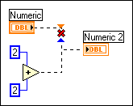

You have wired several terminals together, and more than one of them is a control or other kind of data input, such as a terminal or a function.
To correct this error, change all but one of the data inputs to indicators, or unwire from all but one of the function outputs.